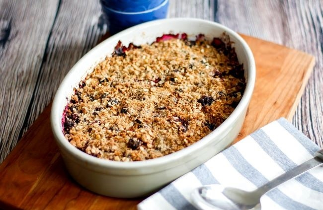

- 800g mixed apples
- 4 teaspoons caster sugar
- 100g frozen berries
- 20g cold unsalted butter
- 50g plain flour
- 75g Granola Dust
|
- Preheat the oven to 190°C.
- Peel, core and quarter the apples, then cut into chunks.
- Place the apples in a pan with the sugar and cook over a low heat, stirring occasionally, for 10 minutes, or until slightly softened. Remove from the heat, stir through the frozen berries and leave to cool a little.
- Meanwhile, cube the butter and place in a mixing bowl with the flour. Rub together with your fingertips until it resembles breadcrumbs, then stir in the Granola Dust.
- Transfer the fruit mixture to a baking dish and sprinkle over the crumble topping.
- Bake in the oven for 25 to 30 minutes, or until golden and crunchy.
|
Serving
Top it with a scoop of greek yoghurt or ic cream!

Subscribe to get more recipes on your email:
nyheter@marleneskoek.com
|